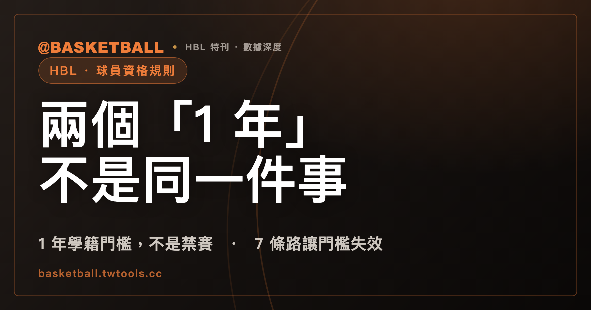

轉學生要禁賽 1 年？HBL 規程裡有兩個「1 年」，指的不是同一件事
114 學年度高級中等學校籃球聯賽競賽規程，對球員資格開出好幾道關卡：年齡、學籍、外籍生身分、職業與禁藥認證。轉學生容易卡住的是學籍這一關——規程要求就讀學校要有 1 年以上學籍才能報名，但同時明文列出 7 種讓這道門檻失效的例外路徑；而球迷常說的「轉學禁賽 1 年」，其實是規程裡另一組罰則條款，管的也不是同一件事。

新手村｜HBL・球員資格規則
每逢轉學季，HBL 球迷群裡常會出現一句話：「這個球員轉學，要禁賽 1 年吧？」這句話把兩件事混在一起了。114 學年度高級中等學校籃球聯賽競賽規程裡，確實有一條規定跟「1 年」有關，管的是轉學生要在新學校累積多久學籍才能報名；規程裡也確實有處分寫著「停止…比賽 1 年」，但那一條管的是資格不實、冒名參賽或球隊棄權，跟轉學這件事本身沒有直接關係。兩條文字剛好都出現「1 年」，才讓人以為是同一件事。
這篇文章照著規程的順序，把球員資格的四道關卡——年齡、學籍、外籍生身分、職業與禁藥——拆開講清楚，結尾回到「1 年學籍」跟「1 年禁賽」這組容易搞混的對比，讓你自己判一次假設案例。
球員年齡門檻，先看這一天
114 學年度規程對年齡只定了一個基準：民國 95 年 9 月 1 日（含）以後出生者才符合資格。這一款寫在第 7 條「參賽資格」裡，沒有再依甲級、乙級或男女生組分別訂不同的出生年限，適用全部組別。
年齡門檻有一個例外，但這個例外跟後面要講的學籍例外不是同一回事：114 學年度規程規定，為顧及女性參賽權益，經參賽資格審議委員會專案審核相關生育事實證明文件，年齡限制得延長 2 年。這一款只放寬女生組球員的年齡上限，跟轉學生的學籍限制完全是兩個條文、兩件事，讀規程時不要把它算進後面的「學籍例外」清單裡。
「1 年學籍」卡的是轉學生與重考生
年齡過關之後，下一關是學籍。114 學年度規程原文是這樣寫的：具學校學籍之在學生，曾報名參加過 HBL 的轉學生或重考生，若要再報名，必須在現在就讀的學校累積 1 年以上學籍，以主管教育行政機關核定的學年開學日為起算基準日。這一款適用全部組別，規程本身沒有替甲級、乙級或男女生組分別訂不同的年限。
這一句要拆開讀才不會誤會。第一，它卡的對象是「曾經報名過 HBL、又轉學或重考」的球員，不是所有轉學生——如果一名學生從沒報名過 HBL，轉學之後第一次報名，這條門檻不適用他。第二，它是報名資格的門檻描述，規程用的動詞是「必須具有」，不是「禁止」或「停止參賽」；換句話說，這是一道「夠不夠格報名」的關卡，不是違規之後才會遇到的處分。這個區別在文章結尾還會再談一次，因為這正是球迷容易搞混的地方。
讓 1 年學籍失效的 7 條路
1 年學籍不是鐵板一塊。114 學年度規程在同一條文裡，明文列出 6 款讓這道門檻失效的情形，只要符合其中一款、並檢附相關證明文件，就不受 1 年學籍限制：
| 例外款次 | 適用情形 |
|---|---|
| 第 1 款 | 依法規規定，輔導轉學之學生 |
| 第 2 款 | 原就讀學校係因教育部諭令停招、解散之學生 |
| 第 3 款 | 已報請行政主管機關並獲核准學校停招、停辦之學生 |
| 第 4 款 | 學校運動代表隊經行政主管機關核准解散，並由所屬機關函報運動部同意備查之學生 |
| 第 5 款 | 上學年度報名學校函具主教練簽章轉學同意書，且經學校核章同意之學生 |
| 第 6 款 | 具正當理由轉學之學生，欲報名「運動成績優良學生升學輔導辦法」規範之組別（含同級別及跨級別），由參賽學校檢具相關證明文件函報高中體總，經參賽資格審議委員會審核通過者 |
這 6 款裡，前 5 款只要備妥證明文件即可適用；只有第 6 款額外要求經參賽資格審議委員會審核通過，才算完成手續，其餘 5 款不需要另外送審。
除了這 6 款，規程另外單獨給了第 7 條路：曾報名參加過 HBL 乙級的轉學生或重考生，若報名的是同級別（乙級對乙級）賽事，學籍完全不受限制。這一款寫在學籍門檻那一句的同一小段裡，跟前面 6 款不在同一層級，規程分開兩段書寫，適用範圍也只限乙級同級別報名，跨級別（乙級轉甲級）不適用這條。
一款要特別提醒：學校運動代表隊經核准解散之後，自次一學年度起 3 年內不得重新組隊報名參賽。這一句附在第 4 款後面，講的是代表隊解散後的重組限制，不是球員個人的資格條件，讀規程時容易跟球員資格混在一起看，但它管的對象是「隊」，不是「人」。
加總起來，1 年學籍門檻本身加上這 7 種讓門檻失效的路徑，才是規程對轉學生／重考生資格的完整骨架——單看「1 年學籍」這一句，會漏掉規程真正留給球隊操作的空間。
外籍生兩條規則，一條擋在報名前，一條擋在場上
外籍生的資格，規程分成兩條完全不同性質的規定，一條卡在報名這一關，一條卡在比賽當下。
報名這一關，114 學年度規程原文只有一句：外國籍學生以工作簽證方式入臺者，不得報名參加。這是報名門檻，跟年齡、學籍一樣屬於「夠不夠格報名」的規定，適用組別規程本身未區分男女生組。
比賽當下這一關，寫在另一條——第 14 條「出場規定」裡：參加甲級賽事之球隊，每隊凡有外國籍學生比賽時，場上人數至多 1 人。這一款只限甲級賽事，規程沒有限制球隊登錄外籍生的人數，限制的是「同一時間站在場上」的外籍生人數不能超過 1 人。這一句是 114 學年度規程第 14 條的原文，跟球迷、媒體常說的「外籍生場上限 1 人」講的是同一件事；113 學年度資格賽抽籤儀式當天，高中體總秘書長朱彩鳳也曾對中央社、自由體育兩家媒體做過同樣的說明，兩年的規則內容一致。
這兩條規定容易被說成同一件事，但報名門檻管的是「能不能報名」，出場規定管的是「同時間能不能站上場」，兩者互不取代：一名符合資格、成功報名的外籍生，仍然受場上人數限制；反過來，場上人數限制也不會影響他有沒有報名資格。
職業身分與禁藥認證，也是報名前的檢查項目
除了年齡、學籍、外籍生身分，114 學年度規程還有兩道獨立的報名前置門檻，適用全部組別。
第一道是職業身分限制：凡簽約、註冊、登錄為職業籃球聯盟球員，或經註冊為中華民國籃球協會社會甲組球員的在學學生，不得報名參加。這一款用詞跟外籍生工作簽證那一款一樣，都是「不得報名參加」，屬於報名前就會擋下來的門檻，不是報名之後才發生的處分。
第二道是禁藥認證：球員須取得財團法人中華運動禁藥防制基金會線上學習平台的測驗合格證明，才可以報名。跟前面幾道門檻不同，這一項不是「身分」條件，而是「手續」條件——球員本身沒有職業身分、學籍也夠，但沒完成這項線上測驗，一樣無法完成報名。
這兩道門檻跟接下來要講的罰則條款，性質也不一樣：門檻決定「能不能報名」，罰則決定「報名之後違規會被怎麼處理」，規程原文的用詞也刻意不同。
「1 年學籍」跟「1 年禁賽」，講的是兩件事
回到文章開頭那句「轉學要禁賽 1 年」。114 學年度規程裡確實有「1 年」的處分文字，但那組條款寫在罰則段落，跟前面講的學籍門檻不在同一條，處分的對象也不是「轉學生身分」本身。
規程罰則段落列了兩種跟「1 年」有關的情形，兩種都適用全部組別。第一種是球隊棄權：球隊一經報名，除天然災害或不可抗力因素外，不得棄權；違反規定者，除了取消該隊繼續參賽資格及已賽成績，還會停止該球隊學校參加 HBL 比賽 1 年——這一條處分的對象是「球隊」，起因是棄權，跟轉學與否無關。第二種是資格不實或冒名參賽：球隊如有資格不實或冒名參賽的球員出賽，經申訴查證屬實者，取消該隊繼續參賽資格及已賽成績、名次，追繳已領補助與獎勵，並停止該球員參加 HBL 比賽 1 年——這一條處分的對象才是球員個人，但起因是「資格不實或冒名」，也就是明知不符資格卻硬要報名、或用別人的身分出賽，並不是「轉學」這個行為本身。
換句話說，一名轉學生只要落在前面講的 7 種例外之一（或原本就滿 1 年學籍），正常完成報名手續，規程不會提到「1 年禁賽」這幾個字；「停止…比賽 1 年」只會發生在報名之後被查出資格造假或球隊棄權的情形。規程另外也註明，罰則段落所稱的「1 年」「2 年」「3 年」一律以學年度計算，跟學籍門檻用開學日起算的算法不是同一套。至於簽賭或打假球，處分不是 1 年，而是終身禁賽，等級又更高一層——三種「禁賽」用詞在規程裡對應三種不同性質的條款，球迷把它們統稱為「禁賽」時，很容易把彼此的門檻與罰則搞混。
拿一個假設案例，自己判一次
假設一名男生組球員，上學年度以 A 高中身分報名過 HBL，這學年度轉學到 B 高中。開賽時，他在 B 高中累積的學籍只有 8 個月，不到 1 年。B 高中想幫他報名，這名球員符不符合資格？
先看他落不落在前面 6 款例外裡：如果他轉學是因為 A 高中被教育部諭令停招、解散（第 2 款），或者他是循「運動成績優良學生升學輔導辦法」規範的組別、經參賽資格審議委員會審核通過轉學（第 6 款），那麼即使學籍不滿 1 年，也不受限制，可以報名。如果他原本報名的是乙級、這學年度轉學後仍報名乙級同級別賽事，也適用第 7 條路，學籍同樣不受限制。反過來，如果他單純是自己想轉學、又不符合任何一款文件要求，那麼在累積滿 1 年學籍之前，B 高中無法幫他完成報名——但這件事跟「禁賽 1 年」無關，他只是還沒有資格報名而已，等學籍滿 1 年，或補齊某一款例外的證明文件，就可以報名。
再換一個情境：如果 B 高中明知這名球員學籍不足、也沒有任何一款例外可用，仍然讓他報名出賽，之後被申訴查證屬實，處分的依據就會變成前一節講的「資格不實」罰則——停止該球員參加 HBL 比賽 1 年，而且是以學年度計算。這時候「1 年」指的才是處分年限，跟一開始「學籍不滿 1 年」的「1 年」，是規程裡兩個不同段落、算法也不同的兩件事。
想進一步了解 114 學年度的賽制與晉級結構，可以看本站的HBL 完整指南。
常見問題
轉學生轉學，就得禁賽 1 年嗎？
不是。114 學年度規程規定的是「轉學生或重考生須有 1 年以上學籍才能報名」，這是報名門檻，不是處分；規程另外列出 6 款例外，加上乙級同級別報名的第 7 條路，只要符合其中一款並備齊證明文件，就不受這道 1 年學籍限制，適用全部組別。規程裡真正寫著「停止…比賽 1 年」的條款，管的是球隊棄權或資格不實／冒名參賽，跟單純轉學不是同一件事。
哪些情況可以不受 1 年學籍限制？
114 學年度規程列出 6 款情形：依法輔導轉學、原校經教育部諭令停招解散、原校報准停招停辦、運動代表隊經核准解散、上學年度轉學同意書並經學校核章、具正當理由轉學且報名升學輔導辦法組別並經審核通過（6 款裡只有這一款需要另外送審）。這 6 款本身不分甲乙級或男女生組。除了這 6 款，另外還有一條獨立路徑：曾報名乙級的轉學生或重考生，報名同級別（乙級對乙級）賽事時，學籍不受限制——這一條路只限乙級對乙級，不適用甲級或跨級別報名。
外籍生上場人數有限制嗎？
有，但只限甲級賽事。114 學年度規程第 14 條規定，參加甲級賽事的球隊，每隊只要有外國籍學生比賽，場上人數至多 1 人；規程沒有限制球隊登錄外籍生的人數，限制的是同一時間站上場的人數。另外，規程第 7 條也規定外國籍學生不得以工作簽證入臺報名，這是報名前就要通過的另一道門檻，跟場上人數限制是兩條不同的規定。
女生因為生育延後參賽，年齡限制會放寬嗎？
會。114 學年度規程規定，為顧及女性參賽權益，經參賽資格審議委員會專案審核相關生育事實證明文件，年齡限制可以延長 2 年，這一款只適用女生組，且只放寬年齡限制，跟轉學生的 1 年學籍門檻是兩個不同的條文，不要把它算進學籍例外的清單裡。
資料來源
- 114 學年度高級中等學校籃球聯賽競賽規程（修正版）：高中體總官方規程頁面，逐頁擷取，取得時間 2026 年 9 月 27 日。hbl.com.tw/rule
- 中央社（記者陳容琛），2024 年 10 月 8 日：〈HBL規定場上至多1名外籍生 盼兼顧比賽公平性〉，113 學年度資格賽抽籤儀式報導。cna.com.tw/news/aspt/202410080367.aspx
- 自由時報自由體育（記者梁偉銘），113 學年度資格賽抽籤儀式同日報導：〈HBL》各隊外籍生限上場一人！甲級資格賽、預賽抽籤下週開打〉。sports.ltn.com.tw/news/breakingnews/4824259